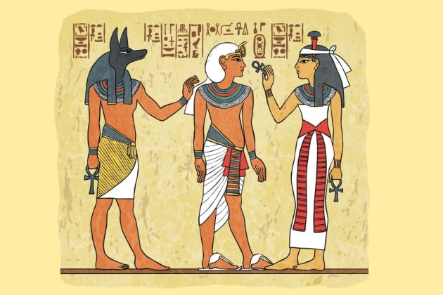

Mya Lam
Egypt was a vast kingdom in the ancient world, the civilization was located in Northeast Africa situated in the Nile Valley. It ranged from 3100 B.C.E and lasted until 332 B.C.E. Egyptian religion was polytheistic and was based upon the belief that higher supernatural entities created and maintained the world and surrounding cosmos. Cosmo's gods included; Shu- the god of air and sky, Geb- the god of earth and Osiris, Isis and Nephthys, who represented models of human society. The Egyptians believed that gods could live indefinitely, survive fatal wounds and be in more than one place at one time. These gods had anthropomorphic qualities and behaved in ways which mirrored the values of culture in Egypt. Goddesses such as Neith, Sekhmet, and Mut had strong ambivalent character traits. Additionally, most gods had an animal association with them, such as Re the god of the sun or Hathor the goddess of women. Gods also had one or more species of animal associated with them. The most important gods could be depicted as falcons and bulls and goddesses were represented by cows, cobras, vultures, and lionesses. For example, the god Sebek was linked to the crocodile and Krepri with the scarab beetle. Myths and religious teachings were recorded in rituals, temple scenes, and specialized texts. Most gods were worshiped daily, with a shrine and temple dedicated to each, signifying their importance. Due to the high value placed on religious beliefs, Ancient Egypt society was heavily based on faith. The effect of religion on daily life is a reflection of the faith-based worldview at the time, showcasing the movement towards the age of faith rather than reason.
